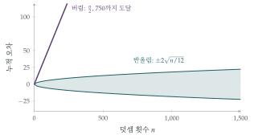

STEP II 1993, 문제 15
계속 읽기 전에 문제를 먼저 읽어 보자. 문제는 STEP Support Programme의 문제 데이터베이스에 있다: step.maths.org/questions/93-s2-q15
도입
1982년 밴쿠버 증권거래소는 \(1000\)에서 출발하는 새로운 지수를 도입했다. 주가가 바뀔 때마다 지수를 다시 계산하고 소수점 아래 셋째 자리까지만 남기고 버림(truncation)했다. 한 번 버릴 때마다 평균적으로 \(0.0005\)를 잃었는데, 이는 무시해도 될 만큼 작아 보인다. 그러나 재계산은 하루에 약 \(3000\)번 이루어졌고, 22개월이 지나자 시장은 올랐는데도 지수는 \(520\) 근처에 머물러 있었다. 지수를 올바르게 다시 계산하자 하룻밤 사이에 약 \(1100\)으로 뛰어올랐다.
이 문제는 무슨 일이 일어났는지 설명해 준다. 버림 오차는 모두 같은 방향을 향하므로 연산 횟수에 비례하여 꾸준히 쌓인다. 반올림(rounding) 오차는 양쪽 방향을 모두 향하므로 대부분 서로 상쇄된다. 반올림 오차는 연산 횟수의 제곱근에 비례하여 커질 뿐인데, 이것이 바로 중심극한정리(central limit theorem, 12.24 절)가 예측하는 확률보행(random walk)의 행동이다.
시작하기 전에
어떤 수의 소수 부분 \(U\)가 \([0, 1)\)에서 균등분포(uniform distribution)를 따른다면, 그 수를 버림할 때 오차는 무엇인가? 반올림할 때는 어떠한가? 각각의 평균과 분산(variance)은 무엇인가?
버림은 \(a\)를 \(\lfloor a\rfloor\)로 바꾸며, 이때 오차(참값에서 근삿값을 뺀 값)는 \(U\)로서 \([0, 1)\)에서 균등분포를 따른다. 평균은 \(\frac12\), 분산은 \(\frac{1}{12}\)이다. 반올림의 오차는 \((-\frac12, \frac12]\)에서 균등분포를 따르며, 평균은 \(0\), 분산은 \(\frac{1}{12}\)이다.
차근차근 풀기
단계 1 전체 오차
\(1500\)개의 수를 더한 뒤의 전체 오차는 \(1500\)개의 독립적인 오차의 합이며, 중심극한정리에 의해 근사적으로 정규분포(normal distribution)를 따른다.
LEP(반올림): 평균 \(0\), 분산 \(\frac{1500}{12} = 125\), 표준편차(standard deviation) \(\sqrt{125} \approx 11.18\).
VOZ(버림): 평균 \(\frac{1500}{2} = 750\), 표준편차는 똑같이 \(11.18\).
단계 2 큰 오차가 생길 확률
LEP의 경우 \(E \sim \mathrm{N}(0, 125)\)일 때 \(\mathrm{P}(|E| > 15)\)는 얼마인가? VOZ의 경우 오차는 거의 확실하게 어디에 있는가?
LEP의 경우 \(\frac{15}{11.18} \approx 1.342\)이므로 \[\mathrm{P}(|E| > 15) \approx 2\bigl(1 - \Phi(1.342)\bigr) \approx 2 \times 0.090 = 0.18.\] VOZ의 경우 오차는 약 \(750 \pm 11\)이다. 오차의 크기가 \(15\)보다 작을 확률은 사실상 영이므로 \(\mathrm{P}(|E| > 15) \approx 1\)이다.■
단계 3 덧셈을 몇 번 할 수 있는가?
\(n\)번 더한 뒤 LEP의 오차의 표준편차는 \(\sqrt{n/12}\)이다. 언제 \(\mathrm{P}(|E| < 10) \geq 0.9\)가 성립하는가?
\(\mathrm{P}(|Z| < 1.645) = 0.9\)이므로 \(\frac{10}{\sqrt{n/12}} \geq 1.645\)이어야 한다. 즉 \(\frac{n}{12} \leq \bigl(\frac{10}{1.645}\bigr)^2 \approx 36.95\)이므로 \(n \leq 443\)이다. LEP는 약 \(443\)번의 덧셈을 할 수 있다.■

돌아보기
각 오차를 모형화한다. 소수 부분이 균등분포를 따른다는 가정 덕분에 각 오차의 분포가 간단해졌다.
평균과 분산을 더한다. 평균은 더해지며(그 결과 편향 \(\frac n2\)가 생긴다), 독립인 오차라면 분산도 더해진다.
정규 근사. 중심극한정리를 이용하여 \(1500\)개의 균등분포 오차의 합을 정규분포로 바꾸었다.
숨은 수학
편향과 분산
버림은 편향(biased)되어 있다. 즉 버림 오차의 평균은 영이 아니며, 편향은 선형으로 쌓인다. 반올림은 비편향(unbiased)이며, 그 오차는 확률보행처럼 행동하여 \(\sqrt n\)에 비례하여 커진다. 연산을 백만 번 하고 나면 그 차이는 \(500\,000\) 정도의 오차와 \(300\) 정도의 오차 사이의 차이가 된다. 이는 실험에서 계통 오차(systematic error, 예를 들어 잘못 보정된 측정 기구)와 무작위 측정 오차(random error)를 구별하는 것과 같다. 측정을 여러 번 하여 평균을 내면 무작위 오차는 줄어들지만 계통 오차는 전혀 줄어들지 않는다.
부동소수점
모든 컴퓨터는 실수를 제한된 정밀도로 저장하며, 모든 산술 연산은 그 결과를 반올림한다. 현대 컴퓨터는 IEEE 754 표준을 따르는데, 이 표준은 표현 가능한 가장 가까운 수로 반올림하고, 두 수의 한가운데인 경우에는 마지막 자릿수가 짝수가 되는 쪽으로 정한다. 바로 이렇게 해야 반올림이 평균적으로 비편향이 되기 때문이다. 그렇더라도 많은 수를 부주의하게 더하면 정확도를 잃을 수 있다. William Kahan의 보정 합산(compensated summation) 알고리즘(1965년)은 잃어버린 하위 자릿수를 추적하여 다시 더해 준다. 1991년 걸프 전쟁에서 한 패트리엇 미사일 포대는 날아오는 미사일을 요격하는 데 실패했는데, 그 포대의 시계가 시간을 10분의 1초 단위로 셌기 때문이다. 10분의 1은 이진법으로 정확하게 저장할 수 없는 수이다. \(100\)시간 동안 작동한 뒤 버림 오차는 약 3분의 1초로 커져 있었고, 이는 목표물의 위치를 반 킬로미터 넘게 잘못 판단하기에 충분했다.
밴쿠버 증권거래소 지수는 1982년 1월 \(1000.000\)의 값으로 만들어졌다. 1983년 11월이 되자 시장이 전반적으로 상승했는데도 지수는 약 \(524\)까지 떨어져 있었다. 자문가들은 지수가 하루에 수천 번 다시 계산되었고 그때마다 소수점 아래 셋째 자리까지 (반올림이 아니라) 버림되었다는 사실을 알아냈다. 주말 동안 올바르게 다시 계산한 지수는 약 \(1098\)에서 다시 시작했다. 이 일화는 수치 계산 강의에서 빠지지 않는 경고 사례이다.
사고 기술
부호가 일정한 오차는 선형으로 쌓이고, 평균이 영인 독립적인 오차는 제곱근처럼 쌓인다. 지금 다루는 오차가 어느 종류인지 파악하라.
대학에서 수치해석(numerical analysis)은 계산 과정에서 오차가 어떻게 전파되는지 연구하며, 통계학은 편향과 분산을 구별한다. “편향-분산 트레이드오프(bias–variance trade-off)”는 현대 기계학습(machine learning)의 핵심이다.
더 도전하기
보정된 VOZ. VOZ가 마지막에 답에 \(\frac n2\)를 더한다면 그 오차는 어떤 분포를 따르는가? 이제 LEP만큼 좋아졌는가?
소수점 아래 첫째 자리로 반올림하기. 수를 소수점 아래 첫째 자리로 반올림하고, 버려지는 자릿수가 균등분포를 따른다고 하자. \(10\,000\)개의 수를 더할 때 전체 오차의 표준편차를 구하라.
밴쿠버 지수. 지수를 하루에 \(3000\)번 다시 계산하고 한 번 버릴 때마다 평균 \(0.0005\)를 잃었다면, 거래일이 \(250\)일인 1년 동안 지수는 얼마나 줄어들겠는가?
정확한 분포. 두 반올림 오차의 합의 정확한 확률밀도함수(삼각형 모양)를 구하라. 세 개의 합에 대해서는 그 개형을 그려 보라. 얼마나 빨리 정규분포처럼 보이기 시작하는가?
더 읽을거리
Nicholas Higham, Accuracy and Stability of Numerical Algorithms (SIAM). 반올림 오차에 관한 권위 있는 책으로, 첫 장은 읽기 쉽다.
David Goldberg, “What every computer scientist should know about floating-point arithmetic”, ACM Computing Surveys 23 (1991). 고전적인 글로, 온라인에서 무료로 볼 수 있다.
Tim Harford, How to Make the World Add Up (Bridge Street). 데이터 속 계통 오차를 다룬다.